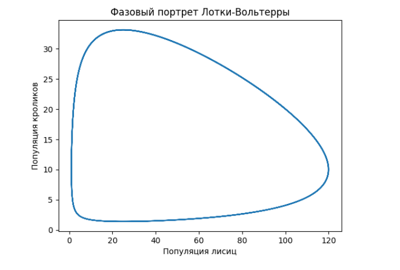

Описание: GNU Octave — свободная программная система для математических вычислений, использующая совместимый с MATLAB язык высокого уровня.
Система дифференциальных уравнений Лотки-Вольтерра. Классическая модель взаимодействия двух биологических видов, известная как модель «хищник-жертва». является математической моделью совместного существования двух биологи-ческих видов (популяций) типа «хищник-жертва» в некоторой изолированной среде. Здесь - число хищников, - число жертв. Коэффициент опрделяет уровень рождаемости жертв, - коэффициент уменьшения числа жертв от встречи с хищником, - коэффициент уменьшения числа хищников от голода, - коэффициент увеличения числа хищников. Среда предоставляет жертвам питание в неограниченном количестве, а хищники питаются лишь жертвами.
Система дифференциальных уравнений Лотки-Вольтерра. Классическая модель взаимодействия двух биологических видов, известная как модель «хищник-жертва». является математической моделью совместного существования двух биологи-ческих видов (популяций) типа «хищник-жертва» в некоторой изолированной среде. Здесь - число хищников, - число жертв. Коэффициент опрделяет уровень рождаемости жертв, - коэффициент уменьшения числа жертв от встречи с хищником, - коэффициент уменьшения числа хищников от голода, - коэффициент увеличения числа хищников. Среда предоставляет жертвам питание в неограниченном количестве, а хищники питаются лишь жертвами.
Построить фазовый портрет системы дифференциальных уравнений при допустимых параметрах:
- — темпы роста популяции кроликов;
- — темпы роста популяции лисиц;
- — популяция кроликов (добычи);
- — популяция лисиц (хищников);
- — рождаемость кроликов;
- — смертность кроликов из-за хищничества;
- — естественная смертность лисиц;
- — коэффициент, описывающий, сколько съеденных кроликов создает новую лису;
from scipy.integrate import odeint
import matplotlib.pyplot as plt
import numpy as npy
# временной шаг определяет точность метода Эйлера интегрирования
timestep = 0.0001
# время окончания симуляции
end_time = 50
# создает вектор времени от 0 до end_time, разделенный временным шагом
t = npy.arange(0,end_time,timestep)
# инициализировать векторы кроликов (x) и лисиц (y)
x = []
y = []
"""" определение параметров лотка-вольтерра"""
# рождаемость кроликов
a = 1
# смертность кроликов из-за хищничества
b = 0.1
# естественная смертность лисиц
c = 0.5
# коэффициент, описывающий, сколько съеденных кроликов создает новую лису
d = 0.02
""" эйлерово интегрирование """
# начальные условия для популяций кроликов (x) и лисиц (y) в момент времени = 0
x.append(100)
y.append(20)
# прямой метод Эйлера интегрирования
# к дифференциалам добавляется член возмущения, чтобы сделать моделирование стохастическим
for index in range(1,len(t)):
#####################################
# система ДУ Лотки-Вольтерра, оценить
# текущие различия
xd = x[index-1] * (a - b*y[index-1])
yd = -y[index-1]*(c - d*x[index-1])
#####################################
# оценить следующее значение x и y, используя дифференциалы
next_x = x[index-1] + xd * timestep
next_y = y[index-1] + yd * timestep
# добавить следующее значение x и y
x.append(next_x)
y.append(next_y)
""" визуализация """
# детерминированный фазовый портрет
plt.plot(x,y)
plt.xlabel('Популяция лисиц')
plt.ylabel('Популяция кроликов')
plt.title('Фазовый портрет Лотки-Вольтерры')
plt.show()
